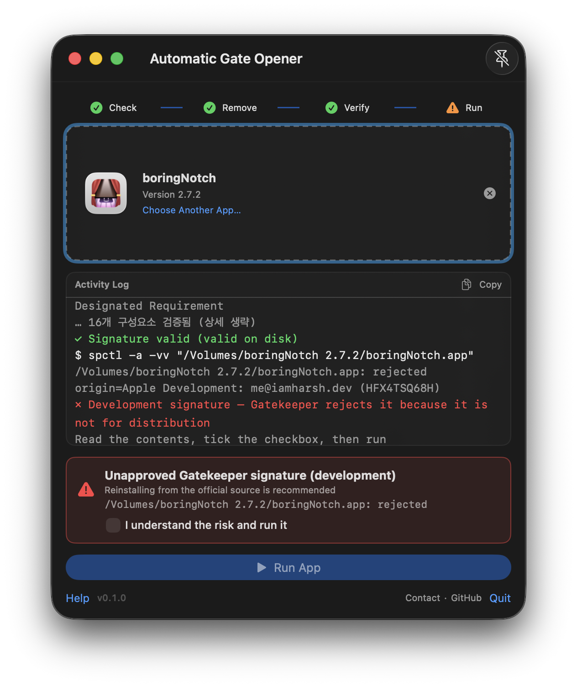
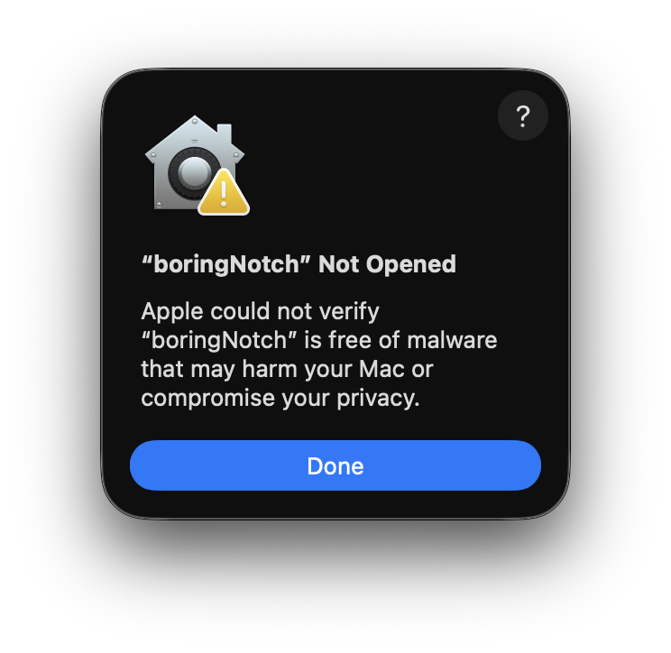

AGO unquarantines the .app, verifies its signature, asks Gatekeeper —
and only launches when you press Run. Tampered apps stop at a red warning, never run silently.
Free · macOS 14+ · Apple silicon & Intel · unsigned build (one manual unblock on first install)

Apps downloaded from a browser or messenger carry the quarantine flag
(com.apple.quarantine), so macOS won't open them until you dig through
System Settings → Privacy & Security and click “Open Anyway”. AGO turns that chore
into a single drag.
Open a plain .app that refuses to launch right after downloading or unzipping.
Quickly clear cases where quarantine — not corruption — is the blocker.
Broken signatures surface as a red card with the exact files. The call is yours.
Drag it onto the window, or press ⌘O to pick a file.
Inspect → unquarantine → verify → assess, all automatic with a live log.
The button enables only on pass — or after you tick the warning checkbox. Never auto-launches.
Every outcome maps to one follow-up. No guessing.
| Message | Meaning | Follow-up |
|---|---|---|
| done quarantine removed | Flag cleared. | Continue — nothing to do. |
| ready signature valid + accepted | All checks passed. | Press Run. |
| warning tampering suspected | Files don't match the signature (e.g. injected dylib). | Read the red card. Reinstall from the official source — or tick the checkbox and run at your own risk. |
| warning development signature | Dev-certificate build, not for distribution. Not malware. | Check the card, tick the checkbox, run. |
| blocked Gatekeeper refused | Failed assessment with tampering evidence. | Cannot run. Download again from the official source. |
| failed couldn't remove quarantine | Permission problem, usually inside /Applications. | Move the app (e.g. to ~/Downloads) and retry. |

sudo escalation..dmg handling (out of scope for v1).